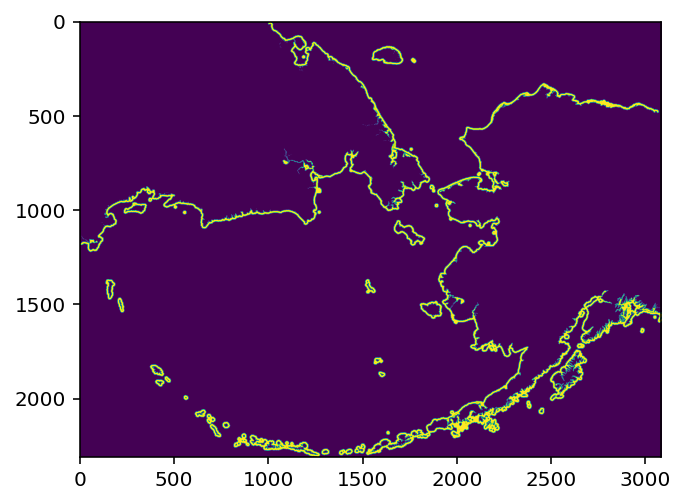
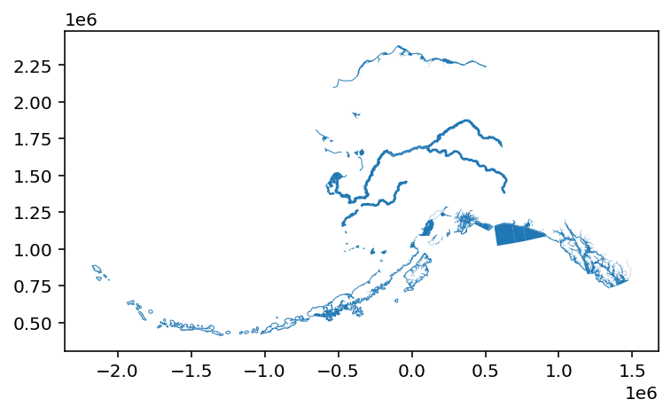
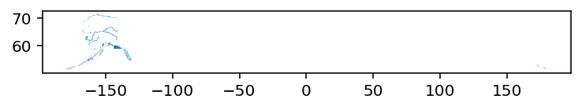
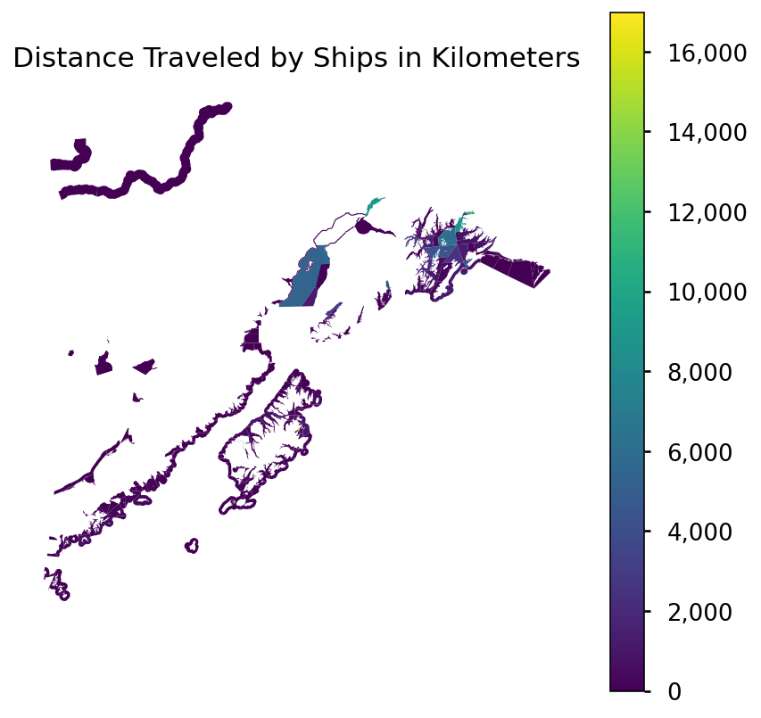

url_sf = 'https://cn.dataone.org/cn/v2/resolve/urn:uuid:dd61089d-f50e-4d87-9b75-6b4e2bd24776'
response_sf = requests.get(url_sf)
open("Coastal_2020_12.tif", "wb").write(response_sf.content)1132748This is a test to make sure we can run some code in this notebook.
import geopandas as gpd
import rasterio
import rasterio.mask
import rasterio.warp
import rasterio.plot
from rasterio import features
from shapely.geometry import box
from shapely.geometry import Polygon
import requests
import matplotlib.pyplot as plt
from matplotlib import style
import pandas as pd
import numpy as npDownload the ship traffic raster from Kapsar et al.. We grab a one month slice from December, 2020 of a coastal subset of data with 1km resolution.
url_sf = 'https://cn.dataone.org/cn/v2/resolve/urn:uuid:dd61089d-f50e-4d87-9b75-6b4e2bd24776'
response_sf = requests.get(url_sf)
open("Coastal_2020_12.tif", "wb").write(response_sf.content)1132748Open the raster file, plot it, and look at the metadata.
with rasterio.open("Coastal_2020_12.tif") as dem_src:
ships = dem_src.read(1)
ships_meta = dem_src.profile
plt.imshow(ships)
print(ships_meta){'driver': 'GTiff', 'dtype': 'float32', 'nodata': -3.3999999521443642e+38, 'width': 3087, 'height': 2308, 'count': 1, 'crs': CRS.from_epsg(3338), 'transform': Affine(999.7994153462766, 0.0, -2550153.29233849,
0.0, -999.9687691991521, 2711703.104608573), 'tiled': False, 'compress': 'lzw', 'interleave': 'band'}
Now download a vector shapefile of commercial fishing districts in Alaska.
url = 'https://knb.ecoinformatics.org/knb/d1/mn/v2/object/urn%3Auuid%3A7c942c45-1539-4d47-b429-205499f0f3e4'
response = requests.get(url)
open("Alaska_Commercial_Salmon_Boundaries.gpkg", "wb").write(response.content)36544512Read in the data
comm = gpd.read_file("Alaska_Commercial_Salmon_Boundaries.gpkg")The raster data is in 3338, so we need to reproject this.
comm.crs
comm_3338 = comm.to_crs("EPSG:3338")
comm_3338.plot()<AxesSubplot:>
We can extract the bounding box for the area of interest, and use that to clip the original raster data to just the extent we need. We use the box function from shapely to create the bounding box, then create a geoDataFrame from them and convert the WGS84 coordinates to the Alaska Albers projection.
todo: explain the warp transform thing here
coords = rasterio.warp.transform_bounds('EPSG:4326',
'EPSG:3338',
-159.5,
55,
-144.5,
62)
coord_list = list(coords)
coord_box = box(coord_list[0],coord_list[1], coord_list[2], coord_list[3])
bbox_crop = gpd.GeoDataFrame(
crs = 'EPSG:3338',
geometry = [coord_box])Read in raster again cropped to bounding box.
with rasterio.open("Coastal_2020_12.tif") as src:
out_image, out_transform = rasterio.mask.mask(src, bbox_crop["geometry"], crop=True)
out_meta = src.meta
out_meta.update({"driver": "GTiff",
"height": out_image.shape[1],
"width": out_image.shape[2],
"transform": out_transform,
"compress": "lzw"})
with rasterio.open("Coastal_2020_12_masked.tif", "w", **out_meta) as dest:
dest.write(out_image)We can also clip the shapefile data to the same bounding box
comm_clip = comm_3338.clip(bbox_crop['geometry'])Quick plot to ensure they are in the same extent, and look as expected.
with rasterio.open('Coastal_2020_12_masked.tif') as src:
r = src.read(1)
r[r == src.nodata] = np.nan
fig, ax = plt.subplots(figsize=(15, 15))
rasterio.plot.show(r,
ax=ax,
vmin = 0,
vmax = 6000,
transform = src.transform)
comm_clip.plot(ax=ax, facecolor='none', edgecolor='red')<AxesSubplot:>
Rasterize each polygon in the shapefile that falls within the bounds of the raster data we are calculating statistics for.
We return a dictionary of indexed arrays, where each item corresponds to one polygon (fishing area). The array contains the indices of the original raster that fall within that fishing area.
with rasterio.open('Coastal_2020_12_masked.tif') as src:
shape = src.shape
transform = src.transform
# read in the cropped raster
r_array = src.read(1)
# turn no data values into actual NaNs
r_array[r_array == src.nodata] = np.nancomm_3338['id'] = range(0,len(comm_3338))
crosswalk_dict = {}
for geom, idx in zip(comm_3338.geometry, comm_3338['id']):
rasterized = features.rasterize(geom,
out_shape=shape,
transform=transform,
all_touched=True,
fill=0,
dtype='uint8')
# only save polygons that have a non-zero value
if any(np.unique(rasterized)) == 1:
crosswalk_dict[idx] = np.where(rasterized == 1)/home/runner/.local/lib/python3.8/site-packages/rasterio/features.py:284: ShapelyDeprecationWarning: Iteration over multi-part geometries is deprecated and will be removed in Shapely 2.0. Use the `geoms` property to access the constituent parts of a multi-part geometry.
for index, item in enumerate(shapes):Now we use the dictionary to calculate the sum of all of the pixels in the original raster that fall within each fishing area.
mean_dict = {}
# for each item in the dictionary
for key, value in crosswalk_dict.items():
# save the sum of the indices of the raster to a new dictionary
mean_dict[key] = np.nansum(r_array[value])
# create a data frame from the result
df = pd.DataFrame.from_dict(mean_dict,
orient='index',
columns=['distance'])
# extract the index of the data frame as a column to use in a join
df['id'] = df.indexNow we join the result to the original geodataframe.
# join the sums to the original data frame
res_full = comm_3338.merge(df, on = "id", how = 'inner')todo: Group by/summarize across another variable
fig, ax = plt.subplots(figsize=(7, 7))
plt.style.use("seaborn-talk")
ax = res_full.plot(column = "distance", legend = True, ax = ax)
fig = ax.figure
cb_ax = fig.axes[1]
cb_ax.set_yticklabels(["0", "2,000", "4,000", "6,000", "8,000", "10,000", "12,000", "14,000", "16,000"])
ax.set_axis_off()
ax.set_title("Distance Traveled by Ships in Kilometers")
plt.show()/tmp/ipykernel_51803/3303410610.py:6: UserWarning: FixedFormatter should only be used together with FixedLocator
cb_ax.set_yticklabels(["0", "2,000", "4,000", "6,000", "8,000", "10,000", "12,000", "14,000", "16,000"])